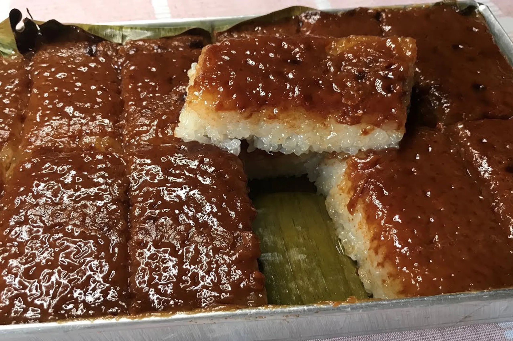

Kakanin

Ingredients
- 2 cups glutinous rice
- 2 cups water
- 1 can coconut milk
- 1 cup sugar
- 1/2 teaspoon salt
- 1/2 cup fresh grated coconut
- banana leaves for lining the pan
Instructions
- Rinse and drain the glutinous rice.
- In a pot, combine the rice and water. Bring to a boil.
- Once boiling, reduce the heat to low, cover the pot, and let it simmer until the water is fully absorbed by the rice.
- In another pot, combine coconut milk, sugar, and salt. Heat it over medium heat until it boils.
- Once the coconut milk mixture is boiling, add the cooked rice. Mix well to ensure that the rice is covered with the coconut milk mixture.
- Continue to cook over low heat, stirring regularly, until the mixture becomes very thick.
- Preheat your steamer. Line a baking dish with banana leaves.
- Transfer the cooked rice mixture into the lined baking dish, spreading it evenly.
- Place the baking dish in the steamer and steam for about 30 minutes, or until the kakanin is fully set.
- Remove from the steamer and let it cool before cutting into serving pieces. Top with fresh grated coconut before serving.
Time
- Preparation Time: 15 minutes
- Cooking Time: 1 hour
- Total Time: 1 hour 15 minutes
Enjoy your Kakanin!